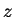
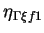
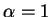
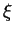
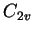
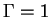
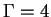
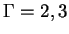

To maximise the point group of your molecule, choose the centre of the coordinate system in the centre of mass (M-menu, option 2), and then rotate the molecule appropriately (option 3 of the M-menu).
We shall use a water molecule HO as an example throughout this Section (all the files for you to try are in TETR/H2O directory). The Vm-menu is like this:
______ Your crystal class group is Oh with elements:
UNIT C4Z C4Y PXY C2Z C3D S4Z3 -C4Z C23 I C3A S4Z
C3C C2Y P4 C24 C26 S3B C3B S4Y C25 S3C C22 -C4Y
PYZ C2X -C3C P1 C21 PXZ -C3B P2 -C3A P3 -C4X S3D2
-C3D S4Y3 C4X S3A2 S3A S3D S4X S4X3 S3B2 S3C2 P5 P6
______ Your largest symmorphic group is C2v with elements:
UNIT C2Z PYZ PXZ
....... The group family is Oh ...
Molecule is NOT linear!
Shmidt: initial number of vectors N= 6
Shmidt: final number of vectors N= 6
>>>>>>>>>>>>>>>>>>>>>>>>><<<<<<<<<<<<<<<<<<<<<<<<<<<
MOLECULE: lattice translations IGNORED
========= CHOOSE an OPTION:
Fx. Specify which orbits to fix
Currently transl/rot constrains ARE applied!
Ir. Collect info about symmetry adapted vectors <- undefined
------- G e n e r a l I n f o r m a t i o n ------
Co. Show general geometry information about orbits
Or. Show detailed information about given orbit
Sy. Show the point symmetry group info
Cn. Show translational-rotational constraints:
Current number of conditions = 6
-------- G e n e r a l S e t t i n g s --------
Am. Atomic masses for every species:
15.99940 [ O] 1.00797 [ H]
XY. Format of <movie.xyz> file is for Xmol
Da. Distortion amplitude: 0.01000
Nd. Number of displacements (for [Au] only): 2
Hs. H atoms to be added to <movie.xyz> file: NO
Q. Proceed/Quit
-----> Choose an appropriate option:
At the top, the point symmetry is shown. It is also checked if the molecule is linear. Note that it is assumed that in this case the molecule should be oriented along the

axis. Also, it is explicitly stated that translations are ignored as explained above.There are many options in this menu. However, most of them are advanced options and you do not need to know them. These are used by the code when it calls itself from inside. Therefore, the user-related options are described first and only then we shall briefly mention other options.
How the system is split into orbits can be seen in Co, the symmetry in Sy, atomic positions in each orbit in Or. Note that the order of atoms may be different from their original order since orbits, not atomic numbers, are now used for ordering. In the table of the Co option, old atomic numbers are given for each orbit for convenience.
By default, the rotational-translational constraints (Section 2.6.8.4) are applied, their number is shown under Cn (this option will show explicitly the actual vectors of translational and rotational degrees of freedom that are used in orthogonalising the symmetry-adapted displacements). In this case all atoms of the molecule are used in calculating vibrations.
However, it is possible to fix some of the orbits2.1 so that they would not participate in vibrations. Use Fx option for this, it implements lists (as in option T, Section 2.3) for entering orbits numbers. If there are any orbits fixed, the rotational-translational constraints, of course, are not applied.
Check if the atomic masses are correct (option Am) and choose the number of displacements you will be using (option Nd) for each degree of freedom (between 1, 2 or 4) as explained in Section 2.6.8.1.
The next step is to use Ir. When this is done, all symmetry related information will be obtained, and the symmetry adapted coordinates calculated. The number of symmetry-adapted coordinates

(note that, as was mentioned eralier, it is sufficient to consider only the first row for 2D and 3D representations, so that
) for the given irreducible representation
. SomeWARNING: general info written to [vibr_info.dat]
>>>>>>>>>>>>>>>>>>>>>>>>><<<<<<<<<<<<<<<<<<<<<<<<<<<
MOLECULE: lattice translations IGNORED
========= CHOOSE an OPTION:
Fx. Specify which orbits to fix
Currently transl/rot constrains ARE applied!
Ir. Collect info about symmetry adapted vectors <- Done
--- A c t i o n s w i t h A c t i v e I r r e p -----
1. irrep (A1 ) is 1D; # of vectors = 2
4. irrep (B2 ) is 1D; # of vectors = 1
---------- A u t o m a t i c o p t i o n ------
Au. FULLY AUTOMATIC: input_for.tetr + directories + scripts
------- G e n e r a l I n f o r m a t i o n ------
Co. Show general geometry information about orbits
Or. Show detailed information about given orbit
Sy. Show the point symmetry group info
Cn. Show translational-rotational constraints:
Current number of conditions = 6
-------- G e n e r a l S e t t i n g s --------
Am. Atomic masses for every species:
15.99940 [ O] 1.00797 [ H]
XY. Format of <movie.xyz> file is for Xmol
Da. Distortion amplitude: 0.01000
Nd. Number of displacements (for [Au] only): 2
Hs. H atoms to be added to <movie.xyz> file: NO
Q. Proceed/Quit
-----> Choose an appropriate option:
You can see that in the case of a water molecule (group

), which has 3 atoms, there should be 9 degrees of freedom. However, since rotational-translational constrains are applied and the molecule is not linear, there will be 6 constrains, so that the number of degrees of freedom is reduced to 9-6=3. These are distributed over two 1D representations:
(called A1) has two symmetry-adapted coordinates, while
(B2) has only one. Other representations
) have none (there are 4 representations in this group, see option Sy).
Next, choose the distortion amplitude Da. This will set the
magnitude of the atomic displacements (in  ) to be used
when calculating forces. The default value of 0.01
) to be used
when calculating forces. The default value of 0.01  is
appropriate in most cases. See the discussion in Section 2.6.8.2.
is
appropriate in most cases. See the discussion in Section 2.6.8.2.
Finally, apply the automatic option Au. This will prompt you to the (input) R-menu (Section 2.6.11.1) in which you must indicate the DFT code you will be running and choose the input file, this should be the same you used when starting the option Vm. After you are done, the following help message appear:
.........................................................
=================> Now, do the following: <==============
1. check script run_DFT_script and edit if necessary
2. run the script to calculate DFT forces
3. run option V2 and/or V3 of tetr to get eigenvectors/values
........................................................
press ENTER when ready ...
In order to understand this message, you should know what has actually happened. When you run the option Au, a set of directories irrep_1 and irrep_4 is created in the current directory. The new directories contain all geometry input files (named 1,2,3, etc.) with the required distrotion geometries. The files correspond to the chosen DFT code and are distributed between a number of subdirectories related to the number of displacements per degree of freedom and the chosen distortion amplitude. In addition to this, tetr creates a script run_DFT_script to run. For example, if you intend to run VASP, the script for the water molecule created by tetr will be this:
#!/bin/csh
#################################################
# is used to run DFT to get 2nd derivative matrix
#################################################
#...... irrep = 1
set dir=irrep_1/d=0.01000
foreach file ( 1 2 )
/bin/cp $dir/$file POSCAR
vasp
/bin/mv OUTCAR $dir/OUTCAR_$file
end
set dir=irrep_1/d=-0.01000
foreach file ( 1 2 )
/bin/cp $dir/$file POSCAR
vasp
/bin/mv OUTCAR $dir/OUTCAR_$file
end
#...... irrep = 4
set dir=irrep_4/d=0.01000
foreach file ( 1 )
/bin/cp $dir/$file POSCAR
vasp
/bin/mv OUTCAR $dir/OUTCAR_$file
end
set dir=irrep_4/d=-0.01000
foreach file ( 1 )
/bin/cp $dir/$file POSCAR
vasp
/bin/mv OUTCAR $dir/OUTCAR_$file
end
It is assumed that the vasp executable is available in the current directory. When running the script, it loops over all representations and all the geometry files inside their directories. Each time, a geometry file is copied to the current directory and the VASP code is run. After each run, the output file OUTCAR that contains forces will be copied back to the same directory from where the input file has come, and its number will be appended to the file name. At the end of the run of the script, each directory with the input files corresponding to distorted geometries, will also contain all the files with atomic forces. Note that the script should be modified if it is to be run on a parallel machine.
The first part of the calculation (and the most difficult one!) is over. To proceed to the calculation of phonon frequencies, normal coordinates and phonon DOS, run options V2 (Section 2.6.8.8) and/or V3 (Section 2.6.8.9).
Thus, the content of the help message above should now be clear.